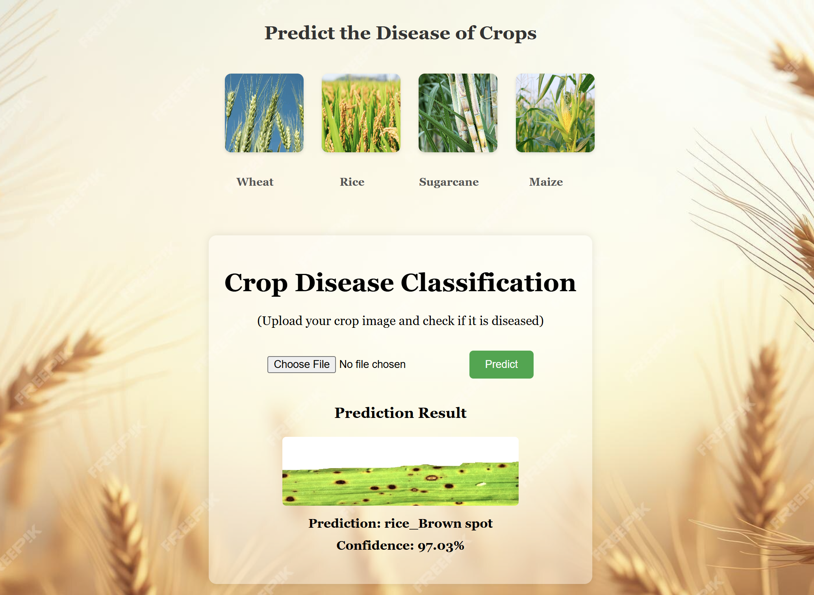

System Architecture

Pipeline: Leaf Image → CNN Feature Extraction → SVM Classification → Prediction Interface
Hybrid CNN + SVM Approach for Accurate Crop Leaf Disease Identification
This project leverages Convolutional Neural Networks (CNNs) for feature extraction and Support Vector Machines (SVMs) for classification to detect and classify crop leaf diseases. By combining deep learning feature extraction with classical ML classification, the system achieves high accuracy while remaining efficient and interpretable.
✅ Achieved accuracy: 96.5% on test data using CNN+SVM hybrid pipeline.
The dataset includes healthy and diseased crop leaf images. Data is preprocessed and segmented for feature extraction. Augmentation ensures balanced classes and improves generalization.
Pipeline: Leaf Image → CNN Feature Extraction → SVM Classification → Prediction Interface

Upload leaf images and get real-time disease prediction